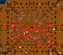
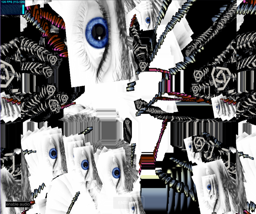
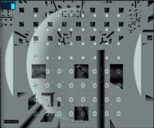

animating shapes in zones and the memory of a Roman Capri villa
animating shapes in zones and the memory of a Roman Capri villa
Simple 3D space may be visually explored by moving the touchpad/mouse LEFT-mouse button.
Those with epileptic vulnerability please use caution in some of the more dynamic channels.
Teleport into VR by clicking 'enter VR' and perhaps giving access permission
Best VR results are obtained using the Brave browser
If a channel fails to load click 'exit VR' and then 'enter VR' again
If this fails try a page refresh and then 'enter VR' again
Cantor 3D fractal orbiting residence ghetto
animating breathing cubes in grim night
animating shapes in zones and the memory of a Roman Capri villa
 slowly rotating dome with constellations of ray bundles
slowly rotating dome with constellations of ray bundles
 Cantor 3D fractal orbiting residence ghetto with gladiolus illumination
Cantor 3D fractal orbiting residence ghetto with gladiolus illumination
sparkling slowly tumbling ellipsoid orbiting glass gladiolus sculpture
Escher 3D stairs and morphing geometric spritecloud
 Cantor 3D space with accompanying bright present spritecloud morphing geometries
transient cubical clusterings and color variations
 underwater photosynthesis
underwater photosynthesis
 pixellated screen and Cantor enclosure
pixellated screen and Cantor enclosure
 Dali-Escher-Blochsphere
 the non-linear passage of time
the non-linear passage of time
entanglement and loss of information
 descending elevator exploration of Cantor 3D orbiting ghetto
ascending elevator exploration of Cantor 3D orbiting ghetto
subway exploration of Cantor 3D orbiting ghetto
forward-backward exploration of Cantor 3D orbiting ghetto
interactive exploration of Cantor 3D orbiting ghetto: L-R,UP-DOWN arrows and z-key (+-SHIFT) camera dolly in X (subway),Y (elevator) and Z (fwd-back) respectively